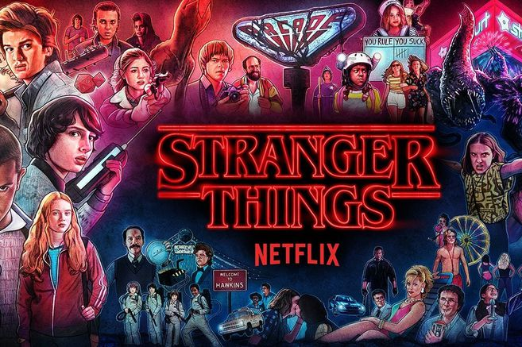

Que es Stranger Things?
Stranger Things és una sèrie estatunidenca de ciència-ficció creada per Netflix escrita i dirigida pels germans Matt i Ross Duffer, amb Shawn Levy com a productor executiu. Es va estrenar en Netflix el 15 de juliol del 2016, amb molt bona crítica per part de la premsa especialitzada, que elogien la interpretació, caracterització, ritme, atmosfera i el clar homenatge al Hollywood dels anys 80, amb clares referències a treballs de Steven Spielberg, John Carpenter, Stephen King, Rob Reiner i George Lucas. La historia se situa a Indiana durant els anys 80, on un noi de 12 anys desapareix misteriosament. Al mateix temps, una nena amb poders telecinèsics intentarà ajudar els amics del noi en el seu intent de trobar-lo.